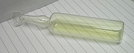

Chlorine
|  | |||||||||||||||||||||||||||||||||||||||||||||||||||||||||||||||||||||||||||||||||||||||||||||||||||||||||||||||||||||||||||||||||||||||||||||||||||||||||||||||||||||||||||||||||||||||||||||||||||||||||||||||||||||||||||||||||||||
|
Emission line spectra; 400–700 nm
|
|||||||||||||||||||||||||||||||||||||||||||||||||||||||||||||||||||||||||||||||||||||||||||||||||||||||||||||||||||||||||||||||||||||||||||||||||||||||||||||||||||||||||||||||||||||||||||||||||||||||||||||||||||||||||||||||||||||
| General properties | |||||||||||||||||||||||||||||||||||||||||||||||||||||||||||||||||||||||||||||||||||||||||||||||||||||||||||||||||||||||||||||||||||||||||||||||||||||||||||||||||||||||||||||||||||||||||||||||||||||||||||||||||||||||||||||||||||||
|---|---|---|---|---|---|---|---|---|---|---|---|---|---|---|---|---|---|---|---|---|---|---|---|---|---|---|---|---|---|---|---|---|---|---|---|---|---|---|---|---|---|---|---|---|---|---|---|---|---|---|---|---|---|---|---|---|---|---|---|---|---|---|---|---|---|---|---|---|---|---|---|---|---|---|---|---|---|---|---|---|---|---|---|---|---|---|---|---|---|---|---|---|---|---|---|---|---|---|---|---|---|---|---|---|---|---|---|---|---|---|---|---|---|---|---|---|---|---|---|---|---|---|---|---|---|---|---|---|---|---|---|---|---|---|---|---|---|---|---|---|---|---|---|---|---|---|---|---|---|---|---|---|---|---|---|---|---|---|---|---|---|---|---|---|---|---|---|---|---|---|---|---|---|---|---|---|---|---|---|---|---|---|---|---|---|---|---|---|---|---|---|---|---|---|---|---|---|---|---|---|---|---|---|---|---|---|---|---|---|---|---|---|---|---|---|---|---|---|---|---|---|---|---|---|---|---|---|---|---|
| Name, symbol | chlorine, Cl | ||||||||||||||||||||||||||||||||||||||||||||||||||||||||||||||||||||||||||||||||||||||||||||||||||||||||||||||||||||||||||||||||||||||||||||||||||||||||||||||||||||||||||||||||||||||||||||||||||||||||||||||||||||||||||||||||||||
| Pronunciation | /ˈklɔəriːn/ or /ˈklɔərɨn/ KLOHR-een or KLOHR-ən |
||||||||||||||||||||||||||||||||||||||||||||||||||||||||||||||||||||||||||||||||||||||||||||||||||||||||||||||||||||||||||||||||||||||||||||||||||||||||||||||||||||||||||||||||||||||||||||||||||||||||||||||||||||||||||||||||||||
| Appearance | pale yellow-green gas | ||||||||||||||||||||||||||||||||||||||||||||||||||||||||||||||||||||||||||||||||||||||||||||||||||||||||||||||||||||||||||||||||||||||||||||||||||||||||||||||||||||||||||||||||||||||||||||||||||||||||||||||||||||||||||||||||||||
| Chlorine in the periodic table | |||||||||||||||||||||||||||||||||||||||||||||||||||||||||||||||||||||||||||||||||||||||||||||||||||||||||||||||||||||||||||||||||||||||||||||||||||||||||||||||||||||||||||||||||||||||||||||||||||||||||||||||||||||||||||||||||||||
|
|||||||||||||||||||||||||||||||||||||||||||||||||||||||||||||||||||||||||||||||||||||||||||||||||||||||||||||||||||||||||||||||||||||||||||||||||||||||||||||||||||||||||||||||||||||||||||||||||||||||||||||||||||||||||||||||||||||
| Atomic number | 17 | ||||||||||||||||||||||||||||||||||||||||||||||||||||||||||||||||||||||||||||||||||||||||||||||||||||||||||||||||||||||||||||||||||||||||||||||||||||||||||||||||||||||||||||||||||||||||||||||||||||||||||||||||||||||||||||||||||||
| Standard atomic weight | 35.45[1] (35.446–35.457)[2] | ||||||||||||||||||||||||||||||||||||||||||||||||||||||||||||||||||||||||||||||||||||||||||||||||||||||||||||||||||||||||||||||||||||||||||||||||||||||||||||||||||||||||||||||||||||||||||||||||||||||||||||||||||||||||||||||||||||
| Element category | diatomic nonmetal | ||||||||||||||||||||||||||||||||||||||||||||||||||||||||||||||||||||||||||||||||||||||||||||||||||||||||||||||||||||||||||||||||||||||||||||||||||||||||||||||||||||||||||||||||||||||||||||||||||||||||||||||||||||||||||||||||||||
| Group, block | group 17 (halogens), p-block | ||||||||||||||||||||||||||||||||||||||||||||||||||||||||||||||||||||||||||||||||||||||||||||||||||||||||||||||||||||||||||||||||||||||||||||||||||||||||||||||||||||||||||||||||||||||||||||||||||||||||||||||||||||||||||||||||||||
| Period | period 3 | ||||||||||||||||||||||||||||||||||||||||||||||||||||||||||||||||||||||||||||||||||||||||||||||||||||||||||||||||||||||||||||||||||||||||||||||||||||||||||||||||||||||||||||||||||||||||||||||||||||||||||||||||||||||||||||||||||||
| Electron configuration | [Ne] 3s2 3p5 | ||||||||||||||||||||||||||||||||||||||||||||||||||||||||||||||||||||||||||||||||||||||||||||||||||||||||||||||||||||||||||||||||||||||||||||||||||||||||||||||||||||||||||||||||||||||||||||||||||||||||||||||||||||||||||||||||||||
| per shell | 2, 8, 7 | ||||||||||||||||||||||||||||||||||||||||||||||||||||||||||||||||||||||||||||||||||||||||||||||||||||||||||||||||||||||||||||||||||||||||||||||||||||||||||||||||||||||||||||||||||||||||||||||||||||||||||||||||||||||||||||||||||||
| Physical properties | |||||||||||||||||||||||||||||||||||||||||||||||||||||||||||||||||||||||||||||||||||||||||||||||||||||||||||||||||||||||||||||||||||||||||||||||||||||||||||||||||||||||||||||||||||||||||||||||||||||||||||||||||||||||||||||||||||||
| Phase | gas | ||||||||||||||||||||||||||||||||||||||||||||||||||||||||||||||||||||||||||||||||||||||||||||||||||||||||||||||||||||||||||||||||||||||||||||||||||||||||||||||||||||||||||||||||||||||||||||||||||||||||||||||||||||||||||||||||||||
| Melting point | 171.6 K (−101.5 °C, −150.7 °F) | ||||||||||||||||||||||||||||||||||||||||||||||||||||||||||||||||||||||||||||||||||||||||||||||||||||||||||||||||||||||||||||||||||||||||||||||||||||||||||||||||||||||||||||||||||||||||||||||||||||||||||||||||||||||||||||||||||||
| Boiling point | 239.11 K (−34.04 °C, −29.27 °F) | ||||||||||||||||||||||||||||||||||||||||||||||||||||||||||||||||||||||||||||||||||||||||||||||||||||||||||||||||||||||||||||||||||||||||||||||||||||||||||||||||||||||||||||||||||||||||||||||||||||||||||||||||||||||||||||||||||||
| Density at stp (0 °C and 101.325 kPa) | 3.2 g·L−1 | ||||||||||||||||||||||||||||||||||||||||||||||||||||||||||||||||||||||||||||||||||||||||||||||||||||||||||||||||||||||||||||||||||||||||||||||||||||||||||||||||||||||||||||||||||||||||||||||||||||||||||||||||||||||||||||||||||||
| when liquid, at b.p. | 1.5625 g·cm−3[3] | ||||||||||||||||||||||||||||||||||||||||||||||||||||||||||||||||||||||||||||||||||||||||||||||||||||||||||||||||||||||||||||||||||||||||||||||||||||||||||||||||||||||||||||||||||||||||||||||||||||||||||||||||||||||||||||||||||||
| Critical point | 416.9 K, 7.991 MPa | ||||||||||||||||||||||||||||||||||||||||||||||||||||||||||||||||||||||||||||||||||||||||||||||||||||||||||||||||||||||||||||||||||||||||||||||||||||||||||||||||||||||||||||||||||||||||||||||||||||||||||||||||||||||||||||||||||||
| Heat of fusion | (Cl2) 6.406 kJ·mol−1 | ||||||||||||||||||||||||||||||||||||||||||||||||||||||||||||||||||||||||||||||||||||||||||||||||||||||||||||||||||||||||||||||||||||||||||||||||||||||||||||||||||||||||||||||||||||||||||||||||||||||||||||||||||||||||||||||||||||
| Heat of vaporization | (Cl2) 20.41 kJ·mol−1 | ||||||||||||||||||||||||||||||||||||||||||||||||||||||||||||||||||||||||||||||||||||||||||||||||||||||||||||||||||||||||||||||||||||||||||||||||||||||||||||||||||||||||||||||||||||||||||||||||||||||||||||||||||||||||||||||||||||
| Molar heat capacity | (Cl2) 33.949 J·mol−1·K−1 |
||||||||||||||||||||||||||||||||||||||||||||||||||||||||||||||||||||||||||||||||||||||||||||||||||||||||||||||||||||||||||||||||||||||||||||||||||||||||||||||||||||||||||||||||||||||||||||||||||||||||||||||||||||||||||||||||||||
vapor pressure
|
|||||||||||||||||||||||||||||||||||||||||||||||||||||||||||||||||||||||||||||||||||||||||||||||||||||||||||||||||||||||||||||||||||||||||||||||||||||||||||||||||||||||||||||||||||||||||||||||||||||||||||||||||||||||||||||||||||||
| Atomic properties | |||||||||||||||||||||||||||||||||||||||||||||||||||||||||||||||||||||||||||||||||||||||||||||||||||||||||||||||||||||||||||||||||||||||||||||||||||||||||||||||||||||||||||||||||||||||||||||||||||||||||||||||||||||||||||||||||||||
| Oxidation states | 7, 6, 5, 4, 3, 2, 1, −1 (a strongly acidic oxide) | ||||||||||||||||||||||||||||||||||||||||||||||||||||||||||||||||||||||||||||||||||||||||||||||||||||||||||||||||||||||||||||||||||||||||||||||||||||||||||||||||||||||||||||||||||||||||||||||||||||||||||||||||||||||||||||||||||||
| Electronegativity | Pauling scale: 3.16 | ||||||||||||||||||||||||||||||||||||||||||||||||||||||||||||||||||||||||||||||||||||||||||||||||||||||||||||||||||||||||||||||||||||||||||||||||||||||||||||||||||||||||||||||||||||||||||||||||||||||||||||||||||||||||||||||||||||
| Ionization energies | 1st: 1251.2 kJ·mol−1 2nd: 2298 kJ·mol−1 3rd: 3822 kJ·mol−1 (more) |
||||||||||||||||||||||||||||||||||||||||||||||||||||||||||||||||||||||||||||||||||||||||||||||||||||||||||||||||||||||||||||||||||||||||||||||||||||||||||||||||||||||||||||||||||||||||||||||||||||||||||||||||||||||||||||||||||||
| Covalent radius | 102±4 pm | ||||||||||||||||||||||||||||||||||||||||||||||||||||||||||||||||||||||||||||||||||||||||||||||||||||||||||||||||||||||||||||||||||||||||||||||||||||||||||||||||||||||||||||||||||||||||||||||||||||||||||||||||||||||||||||||||||||
| Van der Waals radius | 175 pm | ||||||||||||||||||||||||||||||||||||||||||||||||||||||||||||||||||||||||||||||||||||||||||||||||||||||||||||||||||||||||||||||||||||||||||||||||||||||||||||||||||||||||||||||||||||||||||||||||||||||||||||||||||||||||||||||||||||
| Miscellanea | |||||||||||||||||||||||||||||||||||||||||||||||||||||||||||||||||||||||||||||||||||||||||||||||||||||||||||||||||||||||||||||||||||||||||||||||||||||||||||||||||||||||||||||||||||||||||||||||||||||||||||||||||||||||||||||||||||||
| Crystal structure | orthorhombic
 |
||||||||||||||||||||||||||||||||||||||||||||||||||||||||||||||||||||||||||||||||||||||||||||||||||||||||||||||||||||||||||||||||||||||||||||||||||||||||||||||||||||||||||||||||||||||||||||||||||||||||||||||||||||||||||||||||||||
| Speed of sound | 206 m·s−1 (gas, at 0 °C) | ||||||||||||||||||||||||||||||||||||||||||||||||||||||||||||||||||||||||||||||||||||||||||||||||||||||||||||||||||||||||||||||||||||||||||||||||||||||||||||||||||||||||||||||||||||||||||||||||||||||||||||||||||||||||||||||||||||
| Thermal conductivity | 8.9×10−3 W·m−1·K−1 | ||||||||||||||||||||||||||||||||||||||||||||||||||||||||||||||||||||||||||||||||||||||||||||||||||||||||||||||||||||||||||||||||||||||||||||||||||||||||||||||||||||||||||||||||||||||||||||||||||||||||||||||||||||||||||||||||||||
| Electrical resistivity | >10 Ω·m (at 20 °C) | ||||||||||||||||||||||||||||||||||||||||||||||||||||||||||||||||||||||||||||||||||||||||||||||||||||||||||||||||||||||||||||||||||||||||||||||||||||||||||||||||||||||||||||||||||||||||||||||||||||||||||||||||||||||||||||||||||||
| Magnetic ordering | diamagnetic[4] | ||||||||||||||||||||||||||||||||||||||||||||||||||||||||||||||||||||||||||||||||||||||||||||||||||||||||||||||||||||||||||||||||||||||||||||||||||||||||||||||||||||||||||||||||||||||||||||||||||||||||||||||||||||||||||||||||||||
| CAS Registry Number | 7782-50-5 | ||||||||||||||||||||||||||||||||||||||||||||||||||||||||||||||||||||||||||||||||||||||||||||||||||||||||||||||||||||||||||||||||||||||||||||||||||||||||||||||||||||||||||||||||||||||||||||||||||||||||||||||||||||||||||||||||||||
| History | |||||||||||||||||||||||||||||||||||||||||||||||||||||||||||||||||||||||||||||||||||||||||||||||||||||||||||||||||||||||||||||||||||||||||||||||||||||||||||||||||||||||||||||||||||||||||||||||||||||||||||||||||||||||||||||||||||||
| Discovery and first isolation | Carl Wilhelm Scheele (1774) | ||||||||||||||||||||||||||||||||||||||||||||||||||||||||||||||||||||||||||||||||||||||||||||||||||||||||||||||||||||||||||||||||||||||||||||||||||||||||||||||||||||||||||||||||||||||||||||||||||||||||||||||||||||||||||||||||||||
| Recognized as an element by | Humphry Davy (1808) | ||||||||||||||||||||||||||||||||||||||||||||||||||||||||||||||||||||||||||||||||||||||||||||||||||||||||||||||||||||||||||||||||||||||||||||||||||||||||||||||||||||||||||||||||||||||||||||||||||||||||||||||||||||||||||||||||||||
| Most stable isotopes | |||||||||||||||||||||||||||||||||||||||||||||||||||||||||||||||||||||||||||||||||||||||||||||||||||||||||||||||||||||||||||||||||||||||||||||||||||||||||||||||||||||||||||||||||||||||||||||||||||||||||||||||||||||||||||||||||||||
|
|||||||||||||||||||||||||||||||||||||||||||||||||||||||||||||||||||||||||||||||||||||||||||||||||||||||||||||||||||||||||||||||||||||||||||||||||||||||||||||||||||||||||||||||||||||||||||||||||||||||||||||||||||||||||||||||||||||
Chlorine is a chemical element with symbol Cl and atomic number 17. Chlorine is in the halogen group (17) and is the second lightest halogen following fluorine. The element is a yellow-green gas under standard conditions, where it forms diatomic molecules. Chlorine has the highest electron affinity and the third highest electronegativity of all the reactive elements. For this reason, chlorine is a strong oxidizing agent. Free chlorine is rare on Earth, and is usually a result of direct or indirect oxidation by oxygen.
The most common compound of chlorine, sodium chloride (common salt), has been known since ancient times. Around 1630 chlorine gas was first synthesized in a chemical reaction, but not recognized as a fundamentally important substance. Characterization of chlorine gas was made in 1774 by Carl Wilhelm Scheele, who supposed it to be an oxide of a new element. In 1809, chemists suggested that the gas might be a pure element, and this was confirmed by Sir Humphry Davy in 1810, who named it from Ancient Greek: χλωρóς (khlôros) "pale green".
Nearly all chlorine in the Earth's crust occurs as chloride in various ionic compounds, including table salt. It is the second most abundant halogen and 21st most abundant chemical element in Earth's crust. Elemental chlorine is commercially produced from brine by electrolysis. The high oxidizing potential of elemental chlorine led commercially to free chlorine's bleaching and disinfectant uses, as well as its many uses of an essential reagent in the chemical industry. Chlorine is used in the manufacture of a wide range of consumer products, about two-thirds of them organic chemicals such as polyvinyl chloride, as well as many intermediates for production of plastics and other end products which do not contain the element. As a common disinfectant, elemental chlorine and chlorine-generating compounds are used more directly in swimming pools to keep them clean and sanitary.
In the form of chloride ions, chlorine is necessary to all known species of life. Other types of chlorine compounds are rare in living organisms, and artificially produced chlorinated organics range from inert to toxic. In the upper atmosphere, chlorine-containing organic molecules such as chlorofluorocarbons have been implicated in ozone depletion. Small quantities of elemental chlorine are generated by oxidation of chloride to hypochlorite in neutrophils, as part of the immune response against bacteria. Elemental chlorine at high concentrations is extremely dangerous and poisonous for all living organisms, and was used in World War I as the first gaseous chemical warfare agent.
Contents
[hide]- 1 Characteristics
- 2 History
- 3 Production
- 4 Applications
- 5 Health effects of the free element and hazards
- 6 Organochlorine compounds as pollutants
- 7 See also
- 8 References
- 9 Bibliography
- 10 External links
Characteristics[edit]
Physical characteristics of chlorine and its compounds[edit]
At standard temperature and pressure, two chlorine atoms form the diatomic molecule Cl2.[5] This is a yellow-green gas that has a distinctive strong odor, familiar to most from common household bleach.[6] The bonding between the two atoms is relatively weak (only 242.580 ± 0.004 kJ/mol), which makes the Cl2 molecule highly reactive. The boiling point at standard pressure is around −34 ˚C, but it can be liquefied at room temperature with pressures above 740 kPa (107 psi).[7]
Although elemental chlorine is yellow-green, the chloride ion, in common with other halide ions, has no color in either minerals or solutions (example, table salt). Similarly, (again as with other halogens) chlorine atoms impart no color to organic chlorides when they replace hydrogen atoms in colorless organic compounds, such as tetrachloromethane. The melting point and density of these compounds is increased by substitution of hydrogen in place of chlorine. Compounds of chlorine with other halogens, however, as well as many chlorine oxides, are visibly colored.
Chemical characteristics[edit]
Along with fluorine, bromine, iodine, and astatine, chlorine is a member of the halogen series that forms the group 17 (formerly VII, VIIA, or VIIB) of the periodic table. Chlorine forms compounds with almost all of the elements to give compounds that are usually called chlorides. Chlorine gas reacts with most organic compounds, and will even sluggishly support the combustion of hydrocarbons.[8]
Hydrolysis of free chlorine or disproportionation in water[edit]
At 25 °C and atmospheric pressure, one liter of water dissolves 3.26 g or 1.125 L of gaseous chlorine.[9] Solutions of chlorine in water contain chlorine (Cl2), hydrochloric acid, and hypochlorous acid:
- Cl2 + H2O
 HCl + HClO
HCl + HClO
This conversion to the right is called disproportionation, because the ingredient chlorine both increases and decreases in formal oxidation state. The solubility of chlorine in water is increased if the water contains dissolved alkali hydroxide, and in this way, chlorine bleach is produced.[10]
- Cl2 + 2 OH− → ClO− + Cl− + H2O
Chlorine gas only exists in a neutral or acidic solution.
Chemistry and compounds[edit]
Chlorine exists in all odd numbered oxidation states from −1 to +7, as well as the elemental state of zero and four in chlorine dioxide (see table below, and also structures in chlorite).[11] Chlorine typically has a −1 oxidation state in compounds, except for compounds containing fluorine, oxygen and nitrogen, all of which are even more electronegative than chlorine. Progressing through the states, hydrochloric acid can be oxidized using manganese dioxide, or hydrogen chloride gas oxidized catalytically by air to form elemental chlorine gas.[12]
| Oxidation state |
Name | Formula | Characteristic compounds |
|---|---|---|---|
| −1 | chlorides | Cl− | ionic chlorides, organic chlorides, hydrochloric acid |
| 0 | chlorine | Cl2 | elemental chlorine |
| +1 | hypochlorites | ClO− | sodium hypochlorite, calcium hypochlorite, dichlorine monoxide |
| +3 | chlorites | ClO− 2 |
sodium chlorite |
| +4 | chlorine(IV) | ClO 2 |
chlorine dioxide |
| +5 | chloryl, chlorates | ClO− 3 ClO+ 2 |
potassium chlorate, chloric acid, dichloryl trisulfate [ClO2]2[S3O10]. |
| +6 | chlorine(VI) | Cl 2O 6 |
dichlorine hexoxide (gas). In liquid or solid disproportionates to mix of +5 and +7 oxidation states, as ionic chloryl perchlorate [ClO 2]+ [ClO 4]− |
| +7 | perchlorates | ClO− 4 |
perchloric acid, perchlorate salts such as magnesium perchlorate, dichlorine heptoxide |
Chlorides[edit]
Chlorine combines with almost all elements to give chlorides. Compounds with oxygen, nitrogen, xenon, and krypton are known, but do not form by direct reaction of the elements.[13] Chloride is one of the most common anions in nature. Hydrogen chloride and its aqueous solution, hydrochloric acid, are produced on megaton scale annually both as valued intermediates but sometimes as undesirable pollutants.
Chlorine oxides[edit]
Chlorine forms a variety of oxides, as seen above: chlorine dioxide (ClO2), dichlorine monoxide (Cl2O), dichlorine hexoxide (Cl2O6), dichlorine heptoxide (Cl2O7). The anionic derivatives of these same oxides are also well known including chlorate (ClO−
3), chlorite (ClO−
2), hypochlorite (ClO−), and perchlorate (ClO−
4). The acid derivatives of these anions are hypochlorous acid (HOCl), chloric acid (HClO3) and perchloric acid (HClO4). The chloroxy cation chloryl (ClO2+) is known and has the same structure as chlorite but with a positive charge and chlorine in the +5 oxidation state.[14] The compound "chlorine trioxide" does not occur, but rather in gas form is found as the dimeric dichlorine hexoxide (Cl2O6)
with a +6 oxidation state. This compound in liquid or solid form
disproportionates to a mixture of +5 and +7 oxidation states, occurring
as the ionic compound chloryl perchlorate, [ClO
2]+
[ClO
4]−
.[15]
In hot concentrated alkali solution hypochlorite disproportionates:
- 2 ClO− → Cl− + ClO−
2 - ClO− + ClO−
2 → Cl− + ClO−
3
Sodium chlorate and potassium chlorate can be crystallized from solutions formed by the above reactions. If their crystals are heated to a high temperature, they undergo a further, final disproportionation:
- 4 ClO−
3 → Cl− + 3 ClO−
4
This same progression from chloride to perchlorate can be accomplished by electrolysis. The anode reaction progression is:[16]
-
Reaction Electrode
potentialCl− + 2 OH− → ClO− + H2O + 2 e− +0.89 volts ClO− + 2 OH− → ClO−
2 + H2O + 2 e−+0.67 volts ClO−
2 + 2 OH− → ClO−
3 + H2O + 2 e−+0.33 volts ClO−
3 + 2 OH− → ClO−
4 + H2O + 2 e−+0.35 volts
Each step is accompanied at the cathode by
- 2 H2O + 2 e− → 2 OH− + H2 (−0.83 volts)
Interhalogen compounds[edit]
Chlorine oxidizes bromide and iodide salts to bromine and iodine,
respectively. However, it cannot oxidize fluoride salts to fluorine. It
makes a variety of interhalogen compounds, such as the chlorine fluorides, chlorine monofluoride (ClF), chlorine trifluoride (ClF
3), chlorine pentafluoride (ClF
5). Chlorides of bromine and iodine are also known.[17]
Organochlorine compounds[edit]
Chlorine is used extensively in organic chemistry in substitution and addition reactions. Chlorine often imparts many desired properties to an organic compound, in part owing to its electronegativity.
Like the other halides, chlorine undergoes electrophilic addition reactions, the most notable one being the chlorination of alkenes and aromatic compounds with a Lewis acid catalyst. Organic chlorine compounds tend to be less reactive in nucleophilic substitution reactions than the corresponding bromine or iodine derivatives, but they tend to be cheaper. They may be activated for reaction by substituting with a tosylate group, or by the use of a catalytic amount of sodium iodide.[citation needed]
Occurrence[edit]
Essentially no chlorine was created in the Big Bang. Chlorine in the universe is created and distributed through the interstellar medium from creation in supernovae, via the r-process.[18] This chlorine provides the supply found in the Solar System.
In meteorites and on Earth, chlorine is found primarily as the chloride ion which occurs in minerals. In the Earth's crust, chlorine is present at average concentrations of about 126 parts per million,[19] predominantly in such minerals as halite (sodium chloride), sylvite (potassium chloride), and carnallite (potassium magnesium chloride hexahydrate).
Chloride is a component of the salt that is deposited in the earth or dissolved in the oceans — about 1.9% of the mass of seawater is chloride ions. Even higher concentrations of chloride are found in the Dead Sea and in underground brine deposits. Most chloride salts are soluble in water, thus, chloride-containing minerals are usually only found in abundance in dry climates or deep underground.
Over 2000 naturally occurring organic chlorine compounds are known.[20]
Isotopes[edit]
Chlorine has a wide range of isotopes. The two stable isotopes are 35Cl (75.77%) and 37Cl (24.23%).[21] Together they give chlorine an atomic weight of 35.4527 g/mol. The half-integer value for chlorine's weight caused some confusion in the early days of chemistry, when it had been postulated that atoms were composed of even units of hydrogen (see Proust's law), and the existence of chemical isotopes was unsuspected.[22]
Trace amounts of radioactive 36Cl exist in the environment, in a ratio of about 7x10−13 to 1 with stable isotopes. 36Cl is produced in the atmosphere by spallation of 36Ar by interactions with cosmic ray protons. In the subsurface environment, 36Cl is generated primarily as a result of neutron capture by 35Cl or muon capture by 40Ca. 36Cl decays to 36S and to 36Ar, with a combined half-life of 308,000 years. The half-life of this isotope makes it suitable for geologic dating in the range of 60,000 to 1 million years. Additionally, large amounts of 36Cl were produced by irradiation of seawater during atmospheric detonations of nuclear weapons between 1952 and 1958. The residence time of 36Cl in the atmosphere is about 1 week. Thus, as an event marker of 1950s water in soil and groundwater, 36Cl is also useful for dating waters less than 50 years before the present. 36Cl has seen use in other areas of the geological sciences, including dating ice and sediments.[21]
History[edit]
The most common compound of chlorine, sodium chloride, has been known since ancient times; archaeologists have found evidence that rock salt was used as early as 3000 BC and brine as early as 6000 BC.[23] Around 1630, chlorine was recognized as a gas by the Flemish chemist and physician Jan Baptist van Helmont.[24]
Elemental chlorine was first prepared and studied in 1774 by Swedish chemist Carl Wilhelm Scheele, and, therefore, he is credited for its discovery.[25] He called it "dephlogisticated muriatic acid air" since it is a gas (then called "airs") and it came from hydrochloric acid (then known as "muriatic acid").[25] However, he failed to establish chlorine as an element, mistakenly thinking that it was the oxide obtained from the hydrochloric acid (see phlogiston theory).[25] He named the new element within this oxide as muriaticum.[25] Regardless of what he thought, Scheele did isolate chlorine by reacting MnO2 (as the mineral pyrolusite) with HCl:[24]
- 4 HCl + MnO2 → MnCl2 + 2 H2O + Cl2
Scheele observed several of the properties of chlorine: the bleaching effect on litmus, the deadly effect on insects, the yellow green color, and the smell similar to aqua regia.[26]
At the time, common chemical theory was: any acid is a compound that contains oxygen (still sounding in the German and Dutch names of oxygen: sauerstoff or zuurstof, both translating into English as acid substance), so a number of chemists, including Claude Berthollet, suggested that Scheele's dephlogisticated muriatic acid air must be a combination of oxygen and the yet undiscovered element, muriaticum.[27][28][29]
In 1809, Joseph Louis Gay-Lussac and Louis-Jacques Thénard tried to decompose dephlogisticated muriatic acid air by reacting it with charcoal to release the free element muriaticum (and carbon dioxide).[25] They did not succeed and published a report in which they considered the possibility that dephlogisticated muriatic acid air is an element, but were not convinced.[30]
In 1810, Sir Humphry Davy tried the same experiment again, and concluded that it is an element, and not a compound.[25] He named this new element as chlorine, from the Greek word χλωρος (chlōros), meaning green-yellow.[31] The name halogen, meaning "salt producer," was originally used for chlorine in 1811 by Johann Salomo Christoph Schweigger. However, this term was later used as a generic term to describe all the elements in the chlorine family (fluorine, bromine, iodine), after a suggestion by Jöns Jakob Berzelius in 1842.[32][33] In 1823, Michael Faraday liquefied chlorine for the first time,[34][35] and demonstrated that what was then known as "solid chlorine" had a structure of chlorine hydrate (Cl2·H2O).[24]
Chlorine gas was first used by French chemist Claude Berthollet to bleach textiles in 1785.[36][37] Modern bleaches resulted from further work by Berthollet, who first produced sodium hypochlorite in 1789 in his laboratory in the town of Javel (now part of Paris, France), by passing chlorine gas through a solution of sodium carbonate. The resulting liquid, known as "Eau de Javel" ("Javel water"), was a weak solution of sodium hypochlorite. However, this process was not very efficient, and alternative production methods were sought. Scottish chemist and industrialist Charles Tennant first produced a solution of calcium hypochlorite ("chlorinated lime"), then solid calcium hypochlorite (bleaching powder).[36] These compounds produced low levels of elemental chlorine, and could be more efficiently transported than sodium hypochlorite, which remained as dilute solutions because when purified to eliminate water, it became a dangerously powerful and unstable oxidizer. Near the end of the nineteenth century, E. S. Smith patented a method of sodium hypochlorite production involving electrolysis of brine to produce sodium hydroxide and chlorine gas, which then mixed to form sodium hypochlorite.[38] This is known as the chloralkali process, first introduced on an industrial scale in 1892, and now the source of essentially all modern elemental chlorine and sodium hydroxide production (a related low-temperature electrolysis reaction, the Hooker process, is now responsible for bleach and sodium hypochlorite production).
Elemental chlorine solutions dissolved in chemically basic water (sodium and calcium hypochlorite) were first used as anti-putrification agents and disinfectants in the 1820s, in France, long before the establishment of the germ theory of disease. This work is mainly due to Antoine-Germain Labarraque, who adapted Berthollet's "Javel water" bleach and other chlorine preparations for the purpose (for a more complete history, see below). Elemental chlorine has since served a continuous function in topical antisepsis (wound irrigation solutions and the like) as well as public sanitation (especially of swimming and drinking water).
In 1826, silver chloride was used to produce photographic images for the first time.[39] Chloroform was first used as an anesthetic in 1847.[39]
Polyvinyl chloride (PVC) was invented in 1912, initially without a purpose.[39]
Chlorine gas was first introduced as a weapon on April 22, 1915, at Ypres by the German Army,[40][41] and the results of this weapon were disastrous because gas masks had not been mass distributed and were tricky to get on quickly.
Production[edit]
In industry, elemental chlorine is usually produced by the electrolysis of sodium chloride dissolved in water. This method, the chloralkali process industrialized in 1892, now provides essentially all industrial chlorine gas.[42] Along with chlorine, the method yields hydrogen gas and sodium hydroxide (with sodium hydroxide actually being the most crucial of the three industrial products produced by the process). The process proceeds according to the following chemical equation:[12]
- 2 NaCl + 2 H2O → Cl2 + H2 + 2 NaOH
The electrolysis of chloride solutions all proceed according to the following equations:
- Cathode: 2 H+(aq) + 2 e− → H2(g)
- Anode: 2 Cl−(aq) → Cl2(g) + 2 e−
Overall process: 2 NaCl (or KCl) + 2 H2O → Cl2 + H2 + 2 NaOH (or KOH)
In diaphragm cell electrolysis, an asbestos (or polymer-fiber) diaphragm separates a cathode and an anode, preventing the chlorine forming at the anode from re-mixing with the sodium hydroxide and the hydrogen formed at the cathode.[43] The salt solution (brine) is continuously fed to the anode compartment and flows through the diaphragm to the cathode compartment, where the caustic alkali is produced and the brine is partially depleted. Diaphragm methods produce dilute and slightly impure alkali but they are not burdened with the problem of preventing mercury discharge into the environment and they are more energy efficient. Membrane cell electrolysis employ permeable membrane as an ion exchanger. Saturated sodium (or potassium) chloride solution is passed through the anode compartment, leaving at a lower concentration.[44] This method is more efficient than the diaphragm cell and produces very pure sodium (or potassium) hydroxide at about 32% concentration, but requires very pure brine.
Laboratory methods[edit]
Small amounts of chlorine gas can be made in the laboratory by combining hydrochloric acid and manganese dioxide. Alternatively a strong acid such as sulfuric acid or hydrochloric acid reacts with sodium hypochlorite solution to release chlorine gas but reacts with sodium chlorate to produce chlorine gas and chlorine dioxide gas as well. In the home, accidents occur when hypochlorite bleach solutions are combined with certain acidic drain-cleaners.
Applications[edit]
Production of industrial and consumer products[edit]
Principal applications of chlorine are in the production of a wide range of industrial and consumer products.[45][46] For example, it is used in making plastics, solvents for dry cleaning and metal degreasing, textiles, agrochemicals and pharmaceuticals, insecticides, dyestuffs, household cleaning products, etc.
Many important industrial products are produced via organochlorine intermediates. Examples include polycarbonates, polyurethanes, silicones, polytetrafluoroethylene, carboxymethyl cellulose, and propylene oxide. Like the other halogens, chlorine participates in free-radical substitution reactions with hydrogen-containing organic compounds. When applied to organic substrates, reaction is often—but not invariably—non-regioselective, and, hence, may result in a mixture of isomeric products. It is often difficult to control the degree of substitution as well, so multiple substitutions are common. If the different reaction products are easily separated, e.g., by distillation, substitutive free-radical chlorination (in some cases accompanied by concurrent thermal dehydrochlorination) may be a useful synthetic route. Industrial examples of this are the production of methyl chloride, methylene chloride, chloroform, and carbon tetrachloride from methane, allyl chloride from propylene, and trichloroethylene, and tetrachloroethylene from 1,2-dichloroethane.
Quantitatively, about 63% and 18% of all elemental chlorine produced is used in the manufacture of organic and inorganic chlorine compounds, respectively.[42] About 15,000 chlorine compounds are being used commercially.[26] The remaining 19% is used for bleaches and disinfection products.[42] The most significant of organic compounds in terms of production volume are 1,2-dichloroethane and vinyl chloride, intermediates in the production of PVC. Other particularly important organochlorines are methyl chloride, methylene chloride, chloroform, vinylidene chloride, trichloroethylene, perchloroethylene, allyl chloride, epichlorohydrin, chlorobenzene, dichlorobenzenes, and trichlorobenzenes. The major inorganic compounds include HCl, Cl2O, HOCl, NaClO3, chlorinated isocyanurates, AlCl3, SiCl4, SnCl4, PCl3, PCl5, POCl3, AsCl3, SbCl3, SbCl5, BiCl3, S2Cl2, SCl2, SOCI2, ClF3, ICl, ICl3, TiCl3, TiCl4, MoCl5, FeCl3, ZnCl2, etc.[42][47]
Pulp bleaching was done often with elemental chlorine in the past. However, this tends to produce organochlorine pollution, and today environmental laws make it prohibitive. Chlorine is used either in chlorine dioxide and sodium hypochlorite stages in elemental chlorine free (ECF) bleaching, or not at all (total chlorine free or TCF bleaching).
Public sanitation, disinfection, and antisepsis[edit]
Combating putrefaction[edit]
In France (as elsewhere) there was a need to process animal guts in order to make musical instrument strings, Goldbeater's skin and other products. This was carried out in "gut factories" (boyauderies) as an odiferous and unhealthy business. In or about 1820, the Société d'encouragement pour l'industrie nationale offered a prize for the discovery of a method, chemical or mechanical, that could be used to separate the peritoneal membrane of animal intestines without causing putrefaction.[48][49] It was won by Antoine-Germain Labarraque, a 44-year-old French chemist and pharmacist who had discovered that Berthollet's chlorinated bleaching solutions ("Eau de Javel") not only destroyed the smell of putrefaction of animal tissue decomposition, but also retarded the decomposition process itself.[49][50]
Labarraque's research resulted in chlorides and hypochlorites of lime (calcium hypochlorite) and of sodium (sodium hypochlorite) being employed not only in the boyauderies but also for the routine disinfection and deodorisation of latrines, sewers, markets, abattoirs, anatomical theatres and morgues.[51] They were also used, with success, in hospitals, lazarets, prisons, infirmaries (both on land and at sea), magnaneries, stables, cattle-sheds, etc.; and for exhumations,[52] embalming, during outbreaks of epidemic illness, fever, blackleg in cattle, etc.[48]
Against infection and contagion[edit]
Labarraque's chlorinated lime and soda solutions have been advocated since 1828 to prevent infection (called "contagious infection", and presumed to be transmitted by "miasmas") and also to treat putrefaction of existing wounds, including septic wounds.[53] In this 1828 work, Labarraque recommended for the doctor to breathe chlorine, wash his hands with chlorinated lime, and even sprinkle chlorinated lime about the patient's bed, in cases of "contagious infection." In 1828, it was well known that some infections were contagious, even though the agency of the microbe was not to be realized or discovered for more than half a century.
During the Paris cholera outbreak of 1832, large quantities of so-called chloride of lime were used to disinfect the capital. This was not simply modern calcium chloride, but contained chlorine gas dissolved in lime-water (dilute calcium hydroxide) to form calcium hypochlorite (chlorinated lime). Labarraque's discovery helped to remove the terrible stench of decay from hospitals and dissecting rooms, and, by doing so, effectively deodorised the Latin Quarter of Paris.[54] These "putrid miasmas" were thought by many to be responsible for the spread of "contagion" and "infection" – both words used before the germ theory of infection. The use of chloride of lime was based on destruction of odors and "putrid matter." One source has claimed that chloride of lime was used by Dr. John Snow to disinfect water from the cholera-contaminated well feeding the Broad Street pump in 1854 London.[55] Three reputable sources that described the famous Broad Street pump cholera epidemic do not mention Snow performing any disinfection of water from that well.[56][57][58] Instead, one reference makes it clear that chloride of lime was used to disinfect the offal and filth in the streets surrounding the Broad Street pump—a common practice in mid-nineteenth century England.[56]:296
Semmelweis and experiments with antisepsis[edit]
Perhaps the most famous application of Labarraque's chlorine and chemical base solutions was in 1847, when Ignaz Semmelweis used (first) chlorine-water (simply chlorine dissolved in pure water), then cheaper chlorinated lime solutions, to deodorize the hands of Austrian doctors, which Semmelweis noticed still carried the stench of decomposition from the dissection rooms to the patient examination rooms. Semmelweis, still long before the germ theory of disease, had theorized that "cadaveric particles" were somehow transmitting decay from fresh medical cadavers to living patients, and he used the well-known "Labarraque's solutions" as the only known method to remove the smell of decay and tissue decomposition (which he found that soap did not). The solutions proved to be far more effective germicide antiseptics than soap (Semmelweis was also aware of their greater efficacy, but not the reason), and this resulted in Semmelweis's (later) celebrated success in stopping the transmission of childbed fever ("puerperal fever") in the maternity wards of Vienna General Hospital in Austria in 1847.[59]
Much later, during World War I in 1916, a standardized and diluted modification of Labarraque's solution, containing hypochlorite (0.5%) and boric acid as an acidic stabilizer, was developed by Henry Drysdale Dakin (who gave full credit to Labarraque's prior work in this area). Called Dakin's solution, the method of wound irrigation with chlorinated solutions allowed antiseptic treatment of a wide variety of open wounds, long before the modern antibiotic era. A modified version of this solution continues to be employed in wound irrigation in the modern era, where it remains effective against multiply antibiotic resistant bacteria (see Century Pharmaceuticals).
Public sanitation[edit]
By 1918, the US Department of Treasury called for all drinking water to be disinfected with chlorine. Chlorine is presently an important chemical for water purification (such as in water treatment plants), in disinfectants, and in bleach. Chlorine in water is more than three times as effective as a disinfectant against Escherichia coli than an equivalent concentration of bromine, and is more than six times more effective than an equivalent concentration of iodine.[60]
Chlorine is usually used (in the form of hypochlorous acid) to kill bacteria and other microbes in drinking water supplies and public swimming pools. In most private swimming pools, chlorine itself is not used, but rather sodium hypochlorite, formed from chlorine and sodium hydroxide, or solid tablets of chlorinated isocyanurates. The drawback of using chlorine in swimming pools is that the chlorine reacts with the proteins in human hair and skin (see Hypochlorous acid). Once the chlorine reacts with the hair and skin, it becomes chemically bonded. Even small water supplies are now routinely chlorinated.[8]
It is often impractical to store and use poisonous chlorine gas for water treatment, so alternative methods of adding chlorine are used. These include hypochlorite solutions, which gradually release chlorine into the water, and compounds like sodium dichloro-s-triazinetrione (dihydrate or anhydrous), sometimes referred to as "dichlor", and trichloro-s-triazinetrione, sometimes referred to as "trichlor". These compounds are stable while solid and may be used in powdered, granular, or tablet form. When added in small amounts to pool water or industrial water systems, the chlorine atoms hydrolyze from the rest of the molecule forming hypochlorous acid (HOCl), which acts as a general biocide, killing germs, micro-organisms, algae, and so on.[61][62]
Use as a weapon[edit]
World War I[edit]
Chlorine gas, also known as bertholite, was first used as a weapon in World War I by Germany on April 22, 1915 in the Second Battle of Ypres.[63] As described by the soldiers it had a distinctive smell of a mixture between pepper and pineapple. It also tasted metallic and stung the back of the throat and chest. Chlorine can react with water in the mucosa of the lungs to form hydrochloric acid, an irritant that can be lethal. The damage done by chlorine gas can be prevented by the activated charcoal commonly found in gas masks, or other filtration methods, which makes the overall chance of death by chlorine gas much lower than those of other chemical weapons. It was pioneered by a German scientist later to be a Nobel laureate, Fritz Haber of the Kaiser Wilhelm Institute in Berlin, in collaboration with the German chemical conglomerate IG Farben, who developed methods for discharging chlorine gas against an entrenched enemy. It is alleged that Haber's role in the use of chlorine as a deadly weapon drove his wife, Clara Immerwahr, to suicide.[64] After its first use, chlorine was utilized by both sides as a chemical weapon, but it was soon replaced by the more deadly phosgene and mustard gas.[65] Theodore Gray wrote in his book The Elements: A Visual Exploration of Every Atom in the Universe "Chlorine was used as a poison gas during the grueling trench-warfare phase. Soldiers would position a line of gas cylinders at the front lines, wait for the wind to shift towards the enemy, then open the valves and run like hell. This practice---sometimes overseen personally by Fritz Haber, a man whose positive contributions to humanity are listed under nitrogen (7)--- was slowly phased out as experience showed that roughly equal numbers of soldiers on both sides died regardless of who set off the gas."[66]
Iraq War[edit]
Chlorine gas has also been used by insurgents against the local population and coalition forces in the Iraq War in the form of chlorine bombs. On March 17, 2007, for example, three chlorine-filled trucks were detonated in the Anbar province killing two and sickening over 350.[67] Other chlorine bomb attacks resulted in higher death tolls, with more than 30 deaths on two separate occasions.[68] Most of the deaths were caused by the force of the explosions rather than the effects of chlorine, since the toxic gas is readily dispersed and diluted in the atmosphere by the blast. The Iraqi authorities have tightened security for elemental chlorine, which is essential for providing safe drinking water to the population.
Syrian Civil War[edit]
There have been allegations of chlorine gas attacks during the Syrian Civil War such as the 2014 Kafr Zita chemical attack.
Islamic State of Iraq and the Levant (ISIL/ISIS)[edit]
On October 24, 2014 it was reported that the Islamic State of Iraq and the Levant had used chlorine gas in the town of Duluiyah, Iraq.[69]
Laboratory analysis of clothing and soil samples confirmed the use of chlorine gas against Kurdish Peshmerga Forces in a vehicle-borne improvised explosive device attack on January 23, 2015 at the Highway 47 Kiske Junction near Mosul.[70]
Health effects of the free element and hazards[edit]
| NFPA 704 "fire diamond" |
|---|

{kind=link}
{kind=link}
{kind=link}
{kind=link}
{kind=link}
{kind=link}
{kind=link}
{kind=link}
Chlorine is a toxic gas that irritates the respiratory system. Because it is heavier than air, it tends to accumulate at the bottom of poorly ventilated spaces. Chlorine gas is a strong oxidizer, which may react with flammable materials.[72]
Chlorine is detectable with measuring devices in concentrations of as low as 0.2 parts per million (ppm), and by smell at 3 ppm. Coughing and vomiting may occur at 30 ppm and lung damage at 60 ppm. About 1000 ppm can be fatal after a few deep breaths of the gas.[26] Breathing lower concentrations can aggravate the respiratory system, and exposure to the gas can irritate the eyes.[73] The toxicity of chlorine comes from its oxidizing power. When chlorine is inhaled at concentrations above 30 ppm, it begins to react with water and cells, which change it into hydrochloric acid (HCl) and hypochlorous acid (HClO).
When used at specified levels for water disinfection, the reaction of chlorine with water is not a major concern for human health. Other materials present in the water may generate disinfection by-products that are associated with negative effects on human health.[74][75]
Chlorine induced cracking in structural materials[edit]
{kind=link}
The element is widely used for purifying water owing to its powerful oxidizing properties, especially potable water supplies and water used in swimming pools. Several catastrophic collapses of swimming pool ceilings have occurred owing to chlorine induced stress corrosion cracking of stainless steel rods used to suspend them.[76] Some polymers are also sensitive to attack, including acetal resin and polybutene. Both materials were used in hot and cold water domestic supplies, and stress corrosion cracking caused widespread failures in the USA in the 1980s and 1990s. The picture on the right shows an acetal joint in a water supply system, which, when it fractured, caused substantial physical damage to computers in the labs below the supply. The cracks started at injection molding defects in the joint and slowly grew until finally triggered. The fracture surface shows iron and calcium salts that were deposited in the leaking joint from the water supply before failure.[77]
Chlorine-iron fire[edit]
The element iron can combine with chlorine at high temperatures in a strong exothermic reaction, creating a chlorine-iron fire.[78][79] Chlorine-iron fires are a risk in chemical process plants, where much of the pipework used to carry chlorine gas is made of steel.[78][79]
Organochlorine compounds as pollutants[edit]
Some organochlorine compounds are serious pollutants. These are produced either as by-products or end products of industrial processes which are persistent in the environment, such as certain chlorinated pesticides and chlorofluorocarbons. Chlorine is added both to pesticides and pharmaceuticals to make the molecules more resistant to enzymatic degradation by bacteria, insects, and mammals, but this property also has the effect of prolonging the residence time of these compounds when they enter the environment. In this respect chlorinated organics have some resemblance to fluorinated organics.
See also[edit]
{kind=link}
References[edit]
- Jump up ^ Conventional Atomic Weights 2013. Commission on Isotopic Abundances and Atomic Weights
- Jump up ^ Standard Atomic Weights 2013. Commission on Isotopic Abundances and Atomic Weights
- Jump up ^ Chlorine, Gas Encyclopaedia, Air Liquide
- Jump up ^ Magnetic susceptibility of the elements and inorganic compounds, in Lide, D. R., ed. (2005). CRC Handbook of Chemistry and Physics (86th ed.). Boca Raton (FL): CRC Press. ISBN 0-8493-0486-5.
- Jump up ^ Kenneth Barbalace (1995-10-22). "Chemical Database: Chlorine". EnvironmentalChemistry.com. Retrieved 2011-09-19.
- Jump up ^ "Facts About Chlorine". Emergency Preparedness and Response. United States Centers for Disease Control and Prevention. Retrieved 2011-09-19.
- Jump up ^ "SRD134 Chlorine". NIST. Retrieved 2012-09-12.
- ^ Jump up to: a b Hammond, C. R. (2000). The Elements, in Handbook of Chemistry and Physics (81st ed.). CRC press. ISBN 0-8493-0481-4.
- Jump up ^ Wiberg 2001, p. 409.
- Jump up ^ Greenwood 1997, pp. 857–858.
- Jump up ^ Greenwood 1997, p. 806.
- ^ Jump up to: a b Wiberg 2001, p. 408.
- Jump up ^ Windholz, Martha et al., eds. (1976). Merck Index of Chemicals and Drugs (9th ed.). Rahway, N.J.: Merck & Co. ISBN 0-911910-26-3.
- Jump up ^ Greenwood 1997, pp. 844–850.
- Jump up ^ Greenwood 1997, p. 849.
- Jump up ^ Cotton, F. Albert & Wilkinson, Geoffrey (1966). Advanced Inorganic Chemistry (2nd ed.). John Wiley & sons. p. 568.
- Jump up ^ Emeléus, H. J (1961). Advances in inorganic chemistry and radiochemistry. pp. 133–143. ISBN 978-0-12-023603-9.
- Jump up ^ Cameron, A.G.W. (June 1957). "Stellar Evolution, Nuclear Astrophysics, and Nucleogenesis" (PDF). CRL-41.
- Jump up ^ Greenwood 1997, p. 795.
- Jump up ^ "Risk assessment and the cycling of natural organochlorines" (PDF). Euro Chlor. Archived from the original (PDF) on 2011-07-26. Retrieved 2007-08-12.
- ^ Jump up to: a b Georges, Audi; Bersillon, O.; Blachot, J.; Wapstra, A.H. (2003). "The NUBASE Evaluation of Nuclear and Decay Properties". Nuclear Physics A (Atomic Mass Data Center) 729: 3–128. Bibcode:2003NuPhA.729....3A. doi:10.1016/j.nuclphysa.2003.11.001.
- Jump up ^ Gamow, George (1967). One Two Three... Infinity: Facts and Speculations of Science (Bantam Science and Mathematics ed.). Bantam. pp. 151–154.
- Jump up ^ "The earliest salt production in the world: an early Neolithic exploitation in Poiana Slatinei-Lunca, Romania". Retrieved 2008-07-10.
- ^ Jump up to: a b c Greenwood 1997, p. 790.
- ^ Jump up to: a b c d e f "17 Chlorine". Elements.vanderkrogt.net. Retrieved 2008-09-12.
- ^ Jump up to: a b c Greenwood 1997, p. 793.
- Jump up ^ Greenwood 1997, p. 792.
- Jump up ^ Ihde, Aaron John (1984). The development of modern chemistry. Courier Dover Publications. p. 158. ISBN 0-486-64235-6.
- Jump up ^ Weeks, Mary Elvira (1932). "The discovery of the elements. XVII. The halogen family". Journal of Chemical Education 9 (11): 1915. Bibcode:1932JChEd...9.1915W. doi:10.1021/ed009p1915.
- Jump up ^ Gay-Lussac, Joseph Louis; Thénard, Louis-Jacques (1809). "On the nature and the properties of muriatic acid and of oxygenated muriatic acid". Mémoires de Physique et de Chimie de la Société d'Arcueil 2: 339–358.
In fact, oxygenated muriatic acid is not decomposed by charcoal, and it might be supposed, from this fact and those that are communicated in this Memoir, that this gas is a simple body. The phenomena that it presents can be explained well enough on this hypothesis; we shall not seek to defend it, however, as it appears to us that they are still better explained by regarding oxygenated muriatic acid as a compound body.
- Jump up ^ Sir Humphry Davy (1811). "On a Combination of Oxymuriatic Gas and Oxygene Gas". Philosophical Transactions of the Royal Society 101: 155–162. doi:10.1098/rstl.1811.0008.
- Jump up ^ Greenwood 1997, p. 789.
- Jump up ^ Snelders, H. A. M. (1971). "J. S. C. Schweigger: His Romanticism and His Crystal Electrical Theory of Matter". Isis 62 (3): 328. doi:10.1086/350763. JSTOR 229946.
- Jump up ^ Chodos, Alan (ed.). "This Month in Physics History September 4, 1821 and August 29, 1831: Faraday and Electromagnetism". American Physical Society. Retrieved 2010-05-08.
- Jump up ^ O'Connor J J & Robertson E F. "Michael Faraday". School of Mathematics and Statistics, University of St Andrews, Scotland. Retrieved 2010-05-08.
- ^ Jump up to: a b "Bleaching". Encyclopædia Britannica (9th Edition (1875) and 10th Edition (1902) ed.). Retrieved 2012-05-02.
- Jump up ^ Aspin, Chris (1981). The Cotton Industry. Shire Publications Ltd. p. 24. ISBN 0-85263-545-1
- Jump up ^ "How Products Are Made" 2. May 2011.
- ^ Jump up to: a b c Jacqueline Brazin. "Chlorine & its Consequences" (PDF). Archived from the original (PDF) on September 18, 2006. Retrieved 2008-07-10.
- Jump up ^ "Chlorine – History" (PDF). Retrieved 2008-07-10.[dead link]
- Jump up ^ "Weaponry: Use of Chlorine Gas Cylinders in World War I". historynet.com. Retrieved 2008-07-10.
- ^ Jump up to: a b c d Greenwood 1997, p. 798.
- Jump up ^ "The diaphragm cell process". Euro Chlor. Retrieved 2007-08-15.
- Jump up ^ "The membrane cell process". Euro Chlor. Retrieved 2007-08-15.
- Jump up ^ "What is chlorine used for?". Euro Chlor. October 2010. Archived from the original on 2011-07-26. Retrieved 2007-08-20.
- Jump up ^ "Chlorine Tree". Chlorine Tree. Retrieved 2007-08-20.
- Jump up ^ Wiberg 2001, p. 412.
- ^ Jump up to: a b Jean Chrétien Ferdinand Hoefer (ed.). "Labarraque, Antoine-Germain". Nouvelle biographie universelle 28. pp. 323–324. OL 24229911M.
- ^ Jump up to: a b Knight, Charles (1867). Arts and sciences 1. Bradbury, Evans & Co. p. 427.
- Jump up ^ Maurice Bouvet (1950). "Les grands pharmaciens: Labarraque (1777–1850)" [The great pharmacists: Labarraque (1777-1850)]. Revue d'histoire de la pharmacie (in French) 38 (128): 97–107. doi:10.3406/pharm.1950.8662.
- Jump up ^ Andras Gédéon (2006). Science and technology in medicine. Springer. pp. 181–2. ISBN 9780387278742.
- Jump up ^ Antoine Germain Labarraque (1828). On the disinfecting properties of Labarraque's preparations of chlorine. Translated by James Scott. p. 8.
- Jump up ^ Scott, James (trans.). On the disinfecting properties of Labarraque's preparations of chlorine (S. Highley, 1828) Accessed Nov 1, 2011.
- Jump up ^ Corbin, Alain. The Foul and the Fragrant: Odor and the French Social Imagination (Harvard University Press, 1988) pp. 121–2.
- Jump up ^ Black and Veatch Corp. (2010). White's Handbook of Chlorination and Alternative Disinfectants. Hoboken, NJ:Wiley. first page, Chapter 9.
- ^ Jump up to: a b Vinten-Johansen, Peter, Howard Brody, Nigel Paneth, Stephen Rachman and Michael Rip. (2003). Cholera, Chloroform, and the Science of Medicine. New York:Oxford University.
- Jump up ^ Hemphill, Sandra. (2007). The Strange Case of the Broad Street Pump: John Snow and the Mystery of Cholera. Los Angeles:University of California
- Jump up ^ Johnson, Steven. (2006). The Ghost Map: The Story of London's Most Terrifying Epidemic and How It Changed Science, Cities, and the Modern World. New York :Riverhead Books
- Jump up ^ "Chlorine Story". americanchemistry. Retrieved 2008-07-10.
- Jump up ^ Koski TA; Stuart LS; Ortenzio LF (1966). "Comparison of chlorine, bromine, iodine as disinfectants for swimming pool water". Applied Microbiology 14 (2): 276–279. PMC 546668. PMID 4959984.
- Jump up ^ Greenwood 1997, p. 860.
- Jump up ^ Wiberg 2001, p. 411.
- Jump up ^ "Battle of Ypres" The Canadian Encyclopedia
- Jump up ^ Smil, Vaclav (2004-04-01). Enriching the Earth: Fritz Haber, Carl Bosch, and the Transformation of World Food Production. p. 226. ISBN 978-0-262-69313-4.
- Jump up ^ "Weapons of War: Poison Gas". First World War.com. Retrieved 2007-08-12.
- Jump up ^ https://books.google.com/books?id=IOY-8hxTJVAC&printsec=frontcover&dq=the+elements+a+visual+exploration&hl=en&sa=X&ei=WGgDVZKxOIWnNt6MgogI&ved=0CBQQ6AEwAA#v=onepage&q&f=false
- Jump up ^ Mahdi, Basim (2007-03-17). "Iraq gas attack makes hundreds ill". CNN. Retrieved 2007-03-17.
- Jump up ^ "'Chlorine bomb' hits Iraq village". BBC News. 2007-05-17. Retrieved 2007-05-17.
- Jump up ^ "ISIS chlorine attack on security forces confirmed – Iraq officials". RT. October 24, 2014.
- Jump up ^ "Lab report on chlorine gas usage" (PDF). Kurdistan Region Security Council. March 14, 2015.
- Jump up ^ http://cameochemicals.noaa.gov/chemical/2862
- Jump up ^ "Chlorine MSDS" (PDF). October 23, 1997 (Revised November 1999). Archived from the original (PDF) on 2007-09-26. Check date values in:
|date=(help) - Jump up ^ Winder, Chris (2001). "The Toxicology of Chlorine". Environmental Research 85 (2): 105–114. Bibcode:2001ER.....85..105W. doi:10.1006/enrs.2000.4110. PMID 11161660.
- Jump up ^ "What's in your Water?: Disinfectants Create Toxic By-products". ACES News. College of Agricultural, Consumer and Environmental Sciences – University of Illinois at Urbana-Champaign. 2009-03-31. Retrieved 2009-03-31.
- Jump up ^ Richardson, Susan D.; Plewa, Michael J.; Wagner, Elizabeth D.; Schoeny, Rita; DeMarini, David M. (2007). "Occurrence, genotoxicity, and carcinogenicity of regulated and emerging disinfection by-products in drinking water: A review and roadmap for research". Mutation Research/Reviews in Mutation Research 636 (1–3): 178–242. doi:10.1016/j.mrrev.2007.09.001. PMID 17980649.
- Jump up ^ Bertolini, Luca; Elsener, Bernhard; Pedeferri, Pietro; Polder, Rob B. (2004). Corrosion of steel in concrete: prevention, diagnosis, repair. Wiley-VCH. p. 148. ISBN 3-527-30800-8.
- Jump up ^ Lewis, P.R. (1 January 2000). Polymer Product Failure. iSmithers Rapra Publishing. pp. 19–. ISBN 978-1-85957-192-7. Retrieved 2011-04-30.
- ^ Jump up to: a b "Chlorine: Product Datasheet" (PDF). Bayer MaterialScience AG. 2008-04-21. Retrieved 2013-12-17.
- ^ Jump up to: a b Sanders, Roy E. (2004). Chemical Process Safety: Learning from Case Histories, 3rd Revised edition. Oxford: Elsevier Science & Technology. p. 92. ISBN 9780750677493.
Bibliography[edit]
- Greenwood, Norman N; Earnshaw, Alan (1997). Chemistry of the Elements (2nd ed.). Oxford: Butterworth-Heinemann. ISBN 0-08-037941-9.
- Wiberg, Egon; Wiberg, Nils; Holleman, Arnold Frederick (2001). Inorganic Chemistry. Academic Press. ISBN 0-12-352651-5.
External links[edit]
- Chlorine at The Periodic Table of Videos (University of Nottingham)
- Agency for Toxic Substances and Disease Registry: Chlorine
- Electrolytic production
- Production and liquefaction of chlorine
- Chlorine Production Using Mercury, Environmental Considerations and Alternatives
- National Pollutant Inventory – Chlorine[dead link]
- National Institute for Occupational Safety and Health – Chlorine Page
- Chlorine Institute – Trade association representing the chlorine industry
- Chlorine Online – the web portal of Eurochlor – the business association of the European chlor-alkali industry
| [hide] Periodic table (Large cells) | |||||||||||||||||||||||||||||||||
|---|---|---|---|---|---|---|---|---|---|---|---|---|---|---|---|---|---|---|---|---|---|---|---|---|---|---|---|---|---|---|---|---|---|
| 1 | 2 | 3 | 4 | 5 | 6 | 7 | 8 | 9 | 10 | 11 | 12 | 13 | 14 | 15 | 16 | 17 | 18 | ||||||||||||||||
| 1 | H | He | |||||||||||||||||||||||||||||||
| 2 | Li | Be | B | C | N | O | F | Ne | |||||||||||||||||||||||||
| 3 | Na | Mg | Al | Si | P | S | Cl | Ar | |||||||||||||||||||||||||
| 4 | K | Ca | Sc | Ti | V | Cr | Mn | Fe | Co | Ni | Cu | Zn | Ga | Ge | As | Se | Br | Kr | |||||||||||||||
| 5 | Rb | Sr | Y | Zr | Nb | Mo | Tc | Ru | Rh | Pd | Ag | Cd | In | Sn | Sb | Te | I | Xe | |||||||||||||||
| 6 | Cs | Ba | La | Ce | Pr | Nd | Pm | Sm | Eu | Gd | Tb | Dy | Ho | Er | Tm | Yb | Lu | Hf | Ta | W | Re | Os | Ir | Pt | Au | Hg | Tl | Pb | Bi | Po | At | Rn | |
| 7 | Fr | Ra | Ac | Th | Pa | U | Np | Pu | Am | Cm | Bk | Cf | Es | Fm | Md | No | Lr | Rf | Db | Sg | Bh | Hs | Mt | Ds | Rg | Cn | 113 | Fl | 115 | Lv | 117 | 118 | |
|
|
|||||||||||||||||||||||||||||||||
|
||
|
||
|
||
|
||
|
||